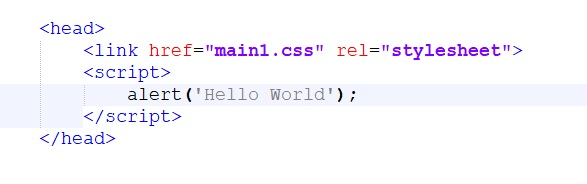

Answer:
The tag in HTML is used to provide metadata about the HTML
document. It includes information such as character encoding, viewport
settings for responsive design, keywords for SEO, and more. Here’s an
example of a tag for specifying character encoding:
<meta charset="UTF-8">
Answer:
Progressive enhancement is an approach to web development that focuses on
providing a baseline experience for all users and then enhancing that
experience for users with more advanced browsers or devices. It starts
with a solid foundation of accessible and semantically meaningful HTML,
and then additional layers of functionality, styling, and interactivity
are added using CSS and JavaScript.
Graceful degradation, on the other hand, takes the opposite approach. It
starts with a fully-featured experience and then ensures that the website
or application still functions reasonably well even in older browsers or
when certain features are not supported.
Both progressive enhancement and graceful degradation aim to ensure that
the user experience is not compromised, regardless of the user’s browser
or device capabilities.
Answer:
The Document Object Model (DOM) is a programming interface for HTML and
XML documents. It represents the structure and content of a web page as a
hierarchical tree of objects. Each element, attribute, and text node in
the HTML document is represented as an object in the DOM tree, allowing
developers to access and manipulate the document’s structure, content, and
styles using JavaScript or other programming languages.
The DOM provides methods and properties to dynamically create, modify, or
remove elements, update styles and classes, handle events, and traverse
the document tree. It plays a vital role in web development, enabling
interactive and dynamic web pages through the manipulation of the
document’s structure and content.
Does the tag < bdo > change the direction of text?
// yes

// yes
What does the scoped attribute do?
// yes